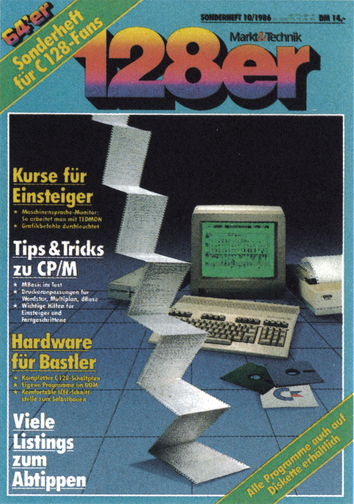

C 128 – der Weg zum Profi

Der C 128 ist eine ausgezeichnete Mischung zwischen »Spiel-Computer« und Profimaschine. Durch den integrierten C 64 stehen Ihnen die unendlich vielen Programme des meistverkauften Computers der Welt zur Verfügung. Der C 128-Modus dagegen ist eine gelungene Weiterentwicklung des C 64: Wesentlich besseres und schnelleres Basic, doppelt so viel Speicherplatz und im Profibereich übliche 80 Zeichen pro Bildschirmzeile. Damit werden Programme möglich, die den Vergleich zu den viel teureren sogenannten Personal Computern, sprich IBM und ähnliche, nicht zu scheuen brauchen und sogar übertreffen. Beispiele sind Protext, Vizawrite Classic oder Vizastar 128: viel schneller als zum Beispiel Word oder Lotus 1-2-3 und vor allem wesentlich billiger. Sie haben also schon eine gute Wahl getroffen.
Interessant ist auch der dritte Computer im C 128, der CP/M-Modus. Ein Vorteil ist, daß es viele bewährte Programme gibt, die auch auf anderen CP/M-Computern laufen. Ein weiterer, daß der Einstieg in die PC-, sprich IBM-Welt, erleichtert wird. Standard-Software, wie zum Beispiel Wordstar, dBase oder Multiplan, gibt es auch für die »Großen«, wenn auch um ein Vielfaches teurer. In immer mehr Firmen und Büros werden diese Programme genutzt. Sie haben also mit dem C 128 und seinem CP/M-Modus den großen Vorteil, schon mal zu üben und fit zu werden und zwar zu einem vernünftigen Preis. Auch in diesem Sonderheft finden Sie eine große Menge an Tips&Tricks zu Wordstar, dBase, Multiplan und CP/M überhaupt. Wenn Sie nicht oder nicht genau wissen, was CP/M eigentlich ist, klären wir Sie darüber ausführlich auf. CP/M ist aber nicht nur für Anwender-Software gut, sondern ebenfalls für Programmiersprachen wie Pascal, Microsoft-Basic oder CBasic. Diese Basic-Varianten gibt es jetzt auch für den C 128. Wir stellen beide in einem Test vor.
Ein echter Knüller wartet auf die Hardware-Freunde unter Ihnen: Der komplette C 128-Schaltplan, erstmalig in diesem 64'er-Sonderheft abgedruckt. Für Bastler ist er sicherlich unentbehrlich und wenn der Computer mal streiken sollte, ist die Fehlerquelle schneller eingegrenzt. Einen Bastelvorschlag wollen wir Ihnen nicht vorenthalten: Wer seinen C 128 schon einmal geöffnet hat, wird der freie Steckplatz aufgefallen sein. Wir sagen Ihnen, was Sie damit machen können und vor allem, wie.
Ein Megabyte Speicherkapazität pro Diskette ist schon fantastisch. Wer hat nicht schon mal mit dem Diskettenlaufwerk SFD 1000 geliebäugelt? Vielleicht haben Sie aber auch Gelegenheit, an ein Doppellaufwerk der alten Commodore-8000er-Serie heranzukommen. In jedem Fall haben Sie jedoch Anschlußprobleme mit dem C 128. Ihm fehlt eine IEEE-Schnittstelle. In diesem Sonderheft präsentieren wir Ihnen ein praxiserprobtes IEEE-Interface zum Selbstbauen. Mit diesem Interface, einem C 64 und einer SFD 1000 wird schon seit längerer Zeit eine umfangreiche Mailbox betrieben und zwar ohne Probleme.
Maschinensprache oder Assembler ist für einige das Nonplusultra, für andere eine Herausforderung und sehr viele haben noch keine Erfahrung damit. Der C 128 besitzt jedoch bekanntermaßen einen Maschinensprache-Monitor, der die ersten Schritte in Richtung Maschinensprache gewaltig erleichtert. Der TEDMON ist jedoch mehr als eine Hilfe beim Programmieren. Mit einem Monitor sollte auch ein Nur-Basic-Programmierer umgehen können. Warum und vor allem wie erklären wir Ihnen in einem sehr ausführlichen Kurs mit vielen Beispielen zum Experimentieren. Im Commodore-Handbuch wird zwar die Bedienung des TEDMON beschrieben, nicht jedoch die großartigen Möglichkeiten, die man mit ihm realisieren kann.
Wenn Sie Interesse an Listings zum Abtippen haben, werden Sie voll auf Ihre Kosten kommen. Alle in dieser Ausgabe veröffentlichten Basic- und Maschinensprache-Programme sind für den C 128-Modus gedacht, darunter ein sehr schnelles Kopierprogramm für die Floppy 1571.
Etwas Besonderes gibt es für Pascal-Freunde: Das abgedruckte Turbo-Pascal-Programm stellt die wichtigsten Informationen eines beliebigen Pascal-Programms in der Art einer Crossreferenzliste zusammen.
Wir haben auch mit diesem Sonderheft wieder versucht, Ihnen möglichst viele Informationen, Tips&Tricks sowie Listings zum Abtippen zu geben. Sicherlich können wir nicht alle Probleme klären und einige Fragen sind offen geblieben. Schreiben Sie uns, was Ihnen gefallen hat, was fehlt oder was wir das nächste Mal besser machen können!
Georg Klinge, leitender Redakteur